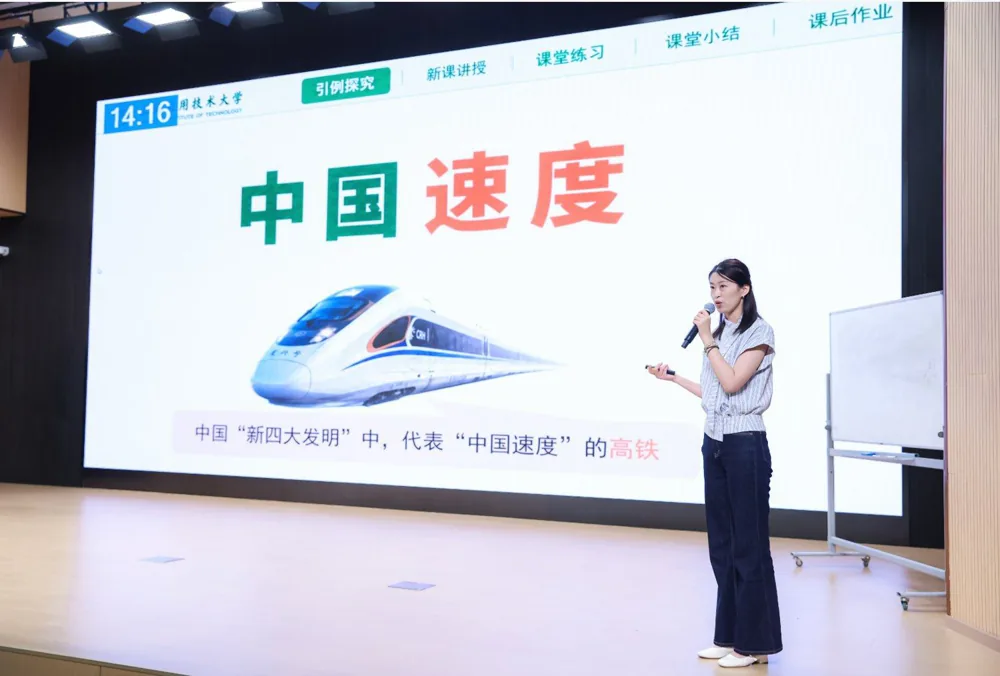

循迹而行，向新而生
一名青年数学教师的年度履职纪实
研究方向：最优控制理论与算法

在科研中寻找最优轨迹，在教学中探索更多可能。
年度剪影
从数学知识走向工程应用
立足线性代数课程，结合最优控制研究方向，以火箭垂直回收为工程背景，开展跨学科教学案例设计。从工程情境创设、数学模型简化，到基础知识与专业知识衔接、AI动态可视化，形成六个环节的教学案例，引导学生从数学知识学习走向工程问题分析。
数驭苍穹 · 参赛作品节选
荣誉记录
国际学术交流与科研获奖
参加2026国际优化技术与应用会议（ICOTA 2026），与合作者开展的时变时滞最优控制快速梯度计算研究荣获 Researcher Best Algorithmic Paper Award。
Fast Gradient Computation for Time-Varying Delay Optimal Control via Control Parameterization
基于控制参数化方法的时变时滞最优控制快速梯度计算
合作研究：Haoruo Xu、Changjun Yu、Kok Lay Teo从学习研修走向教学竞技
参加第26期上海市属高校新教师岗前培训，将教育教学理论学习与数学课堂教学设计相结合。入围最终20人教学技能大赛，成为其中唯一的数学学科教师，并荣获三等奖。
在集体中学习，在服务中成长
岗前培训期间担任班长，在完成培训学习任务的同时，主动承担班级管理、活动组织与沟通协调工作，积极服务参训教师，促进交流与共同成长。
AI赋能高等数学题库建设
参与学院高等数学好课平台题库建设，探索利用AI开展历年试卷的数字化、结构化整理。通过持续调试、规则完善与质量复核，自主开发题库建设 Skill，形成可复用的智能化题库建设流程。
智能化题库建设流程
- 原始试卷数字化历年试卷读取与结构化整理
- 自主开发题库建设 Skill工作流程、输出规范与质量校验规则
- 智能复核与质量优化题目、答案、解析及知识点一致性检查
题库建设过程与成果展示
从一个教学案例走向一门项目制课程
作为课程负责人之一，积极参与学校30³应用创新特班工程数学项目制课程的前期策划、方案研讨、教学设计与课程建设，并承担实际授课任务，与课程团队共同探索面向应用创新型人才培养的数学教学新模式。
围绕工程数学基础课程的内在逻辑与专业应用需求，从知识体系梳理、项目主题遴选、学年教学安排，到课堂任务、教学资源和考核评价设计，参与推动项目制课程从整体构想到具体教学实践。
课程整体设计
教学实施与资源建设
个人教学实践展示
在实际授课中，围绕数学知识的内在逻辑重组教学内容，尝试引入数学专业英语，并通过简单滤镜与边缘检测任务，将函数映射、分段规则、变化率和离散差分等数学知识融入图像处理实践。
下学期课程的探索与研究
面向下学期工程数学项目制课程建设，开展国际数学教材、国外高校项目作业及考核方式的调研与分析，重点研究产业情境融入、递进式任务设计、数据驱动建模及算法逆向探究等教学方法，为后续课程改革与教学实践提供参考。
教学科研并行，持续探索
在开展日常教学与课程改革工作的同时，持续推进最优控制理论与算法相关科研工作，并结合教学探索开展教育教学研究。
ICOTA 2026 国际优化技术与应用会议
投稿优化领域老牌期刊 JOTA（Journal of Optimization Theory and Applications）
投稿《大学数学》